Reminiscing the Philippines

Rizal's Roots in Lingayen
Artist Unknown
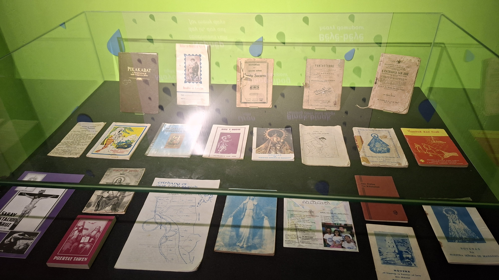
Pangasinan Language, Literature, and Arts
Author Unknown
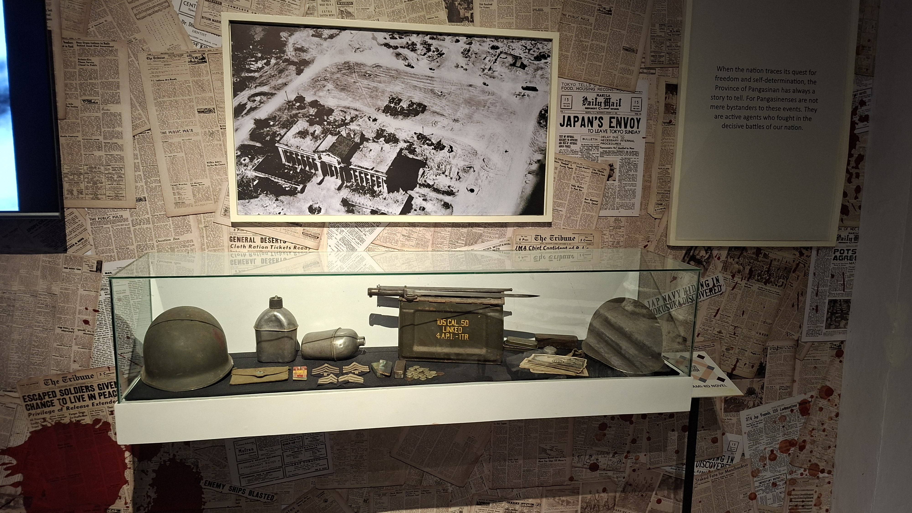
Beachhead of Valor
Author Unknown
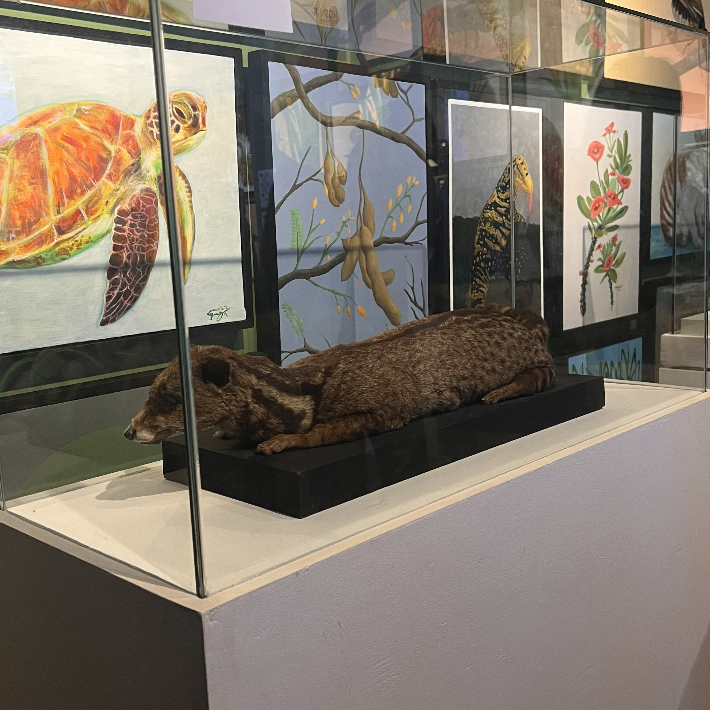
Taxidermy of Civet Cat
Artist Unknown
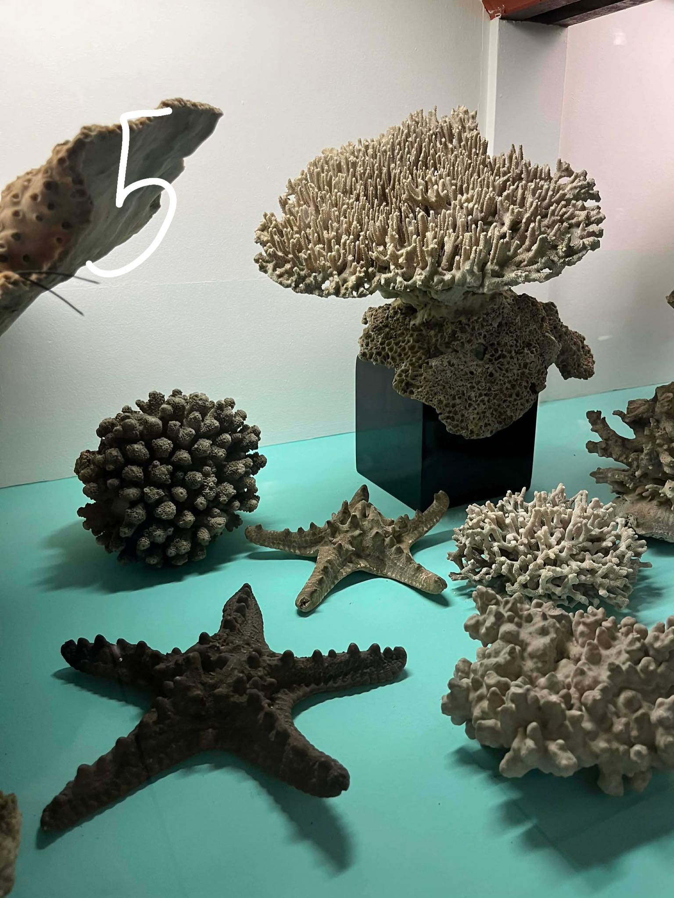
The Spineless Collections of Fr. Casto de Elera, O.P. – Reliving the Past
Fr. Casto de Elera, O.P.
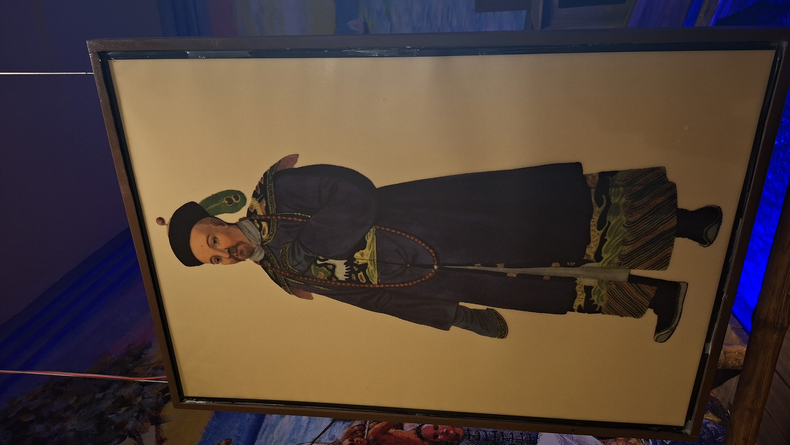
A Mandarin of Distinction in his Habit of Ceremony
George Henry Mason
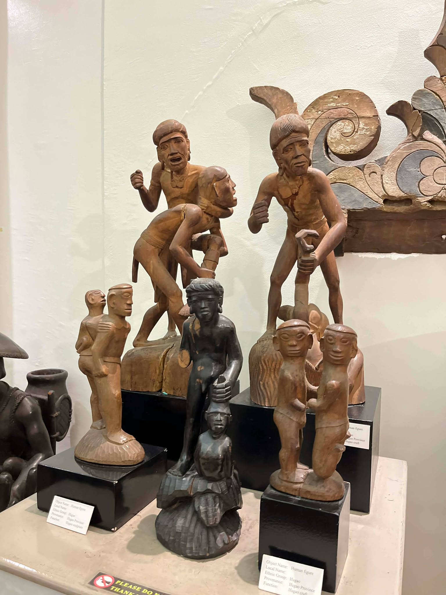
Human Figure (Bulul and Ritual Figures)
Ifugao Craftsmen
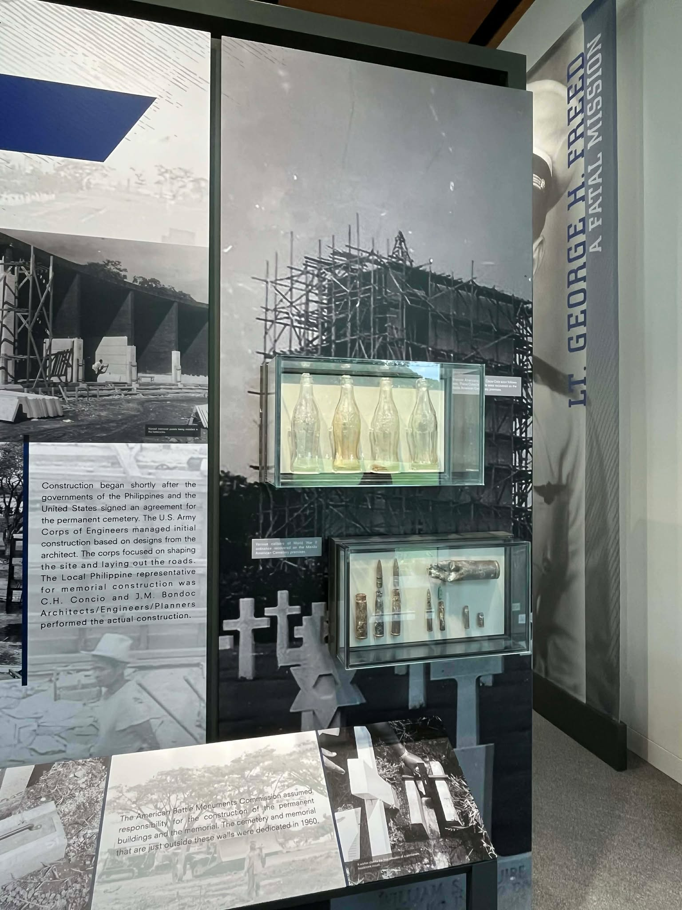
American Cemetery & Memorial Construction
Historical Exhibit
Reminiscing
the
Philippines
the
Philippines
A collection of works
that capture what we value
that capture what we value
Tap to interact

Remnant: The Bolinao Skull
Jerry Buccat
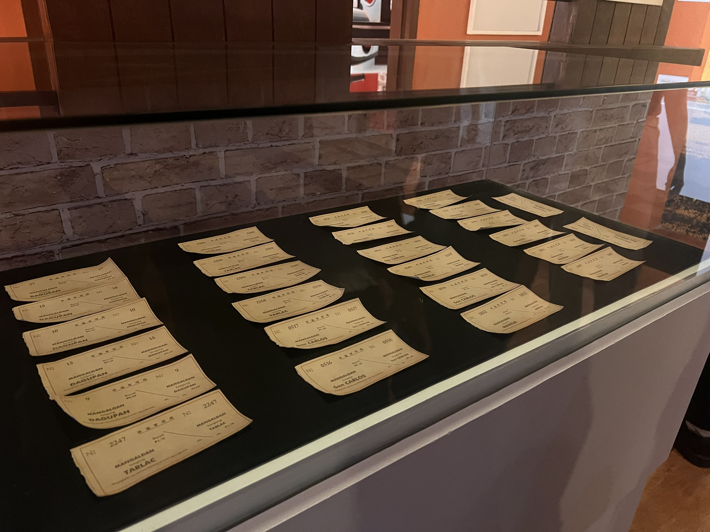
Vintage Tickets of the Ferrocaril de Manila-Dagupan
Historical Artifact
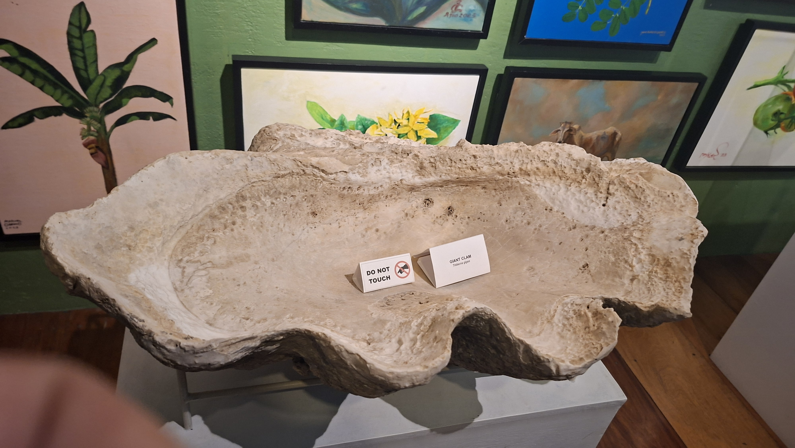
Giant Clam
Natural Specimen
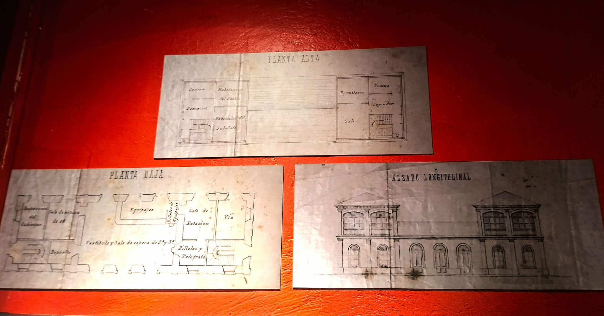
Memoria Sobre el Plan General de Ferrocarriles en la Isla de Luzón
Office of the Inspector of Public Works
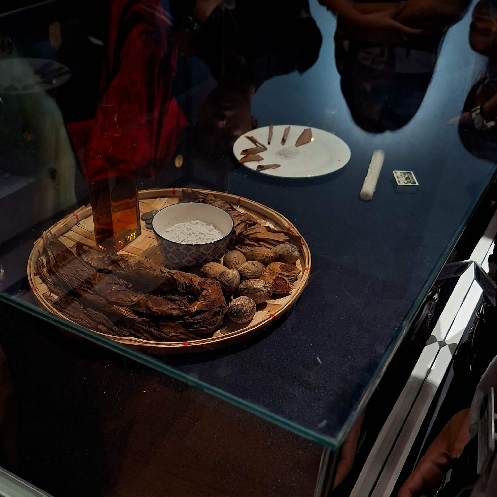
Traditional Way of Curing
Ethnographic Exhibit
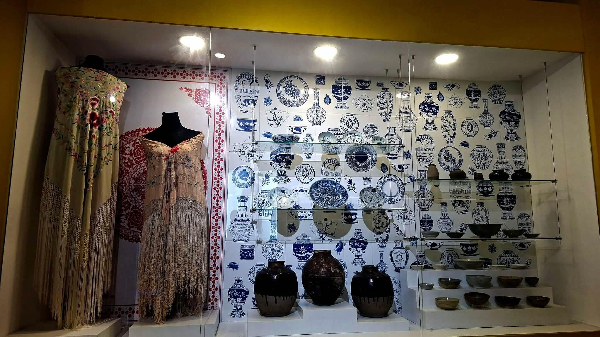
Ancient Pottery
Historical Artifact
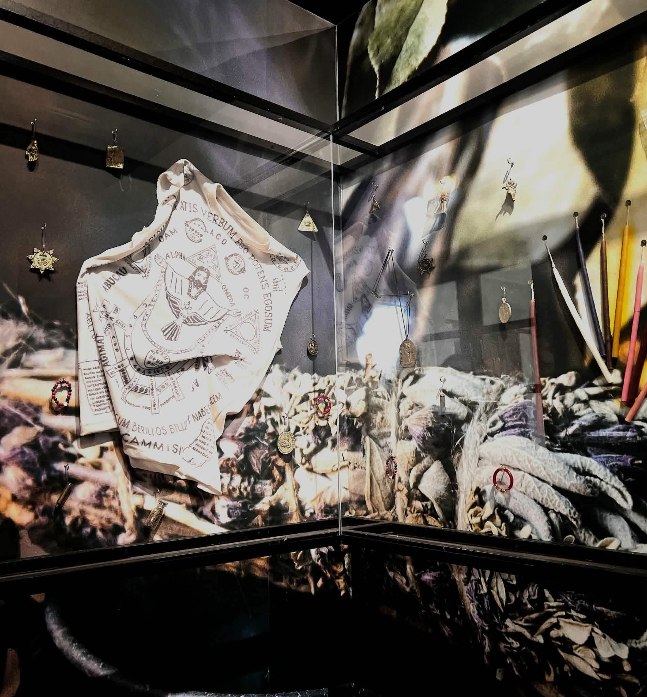
Mga Anting-Anting Collection
Banaan Museum, Laoag City
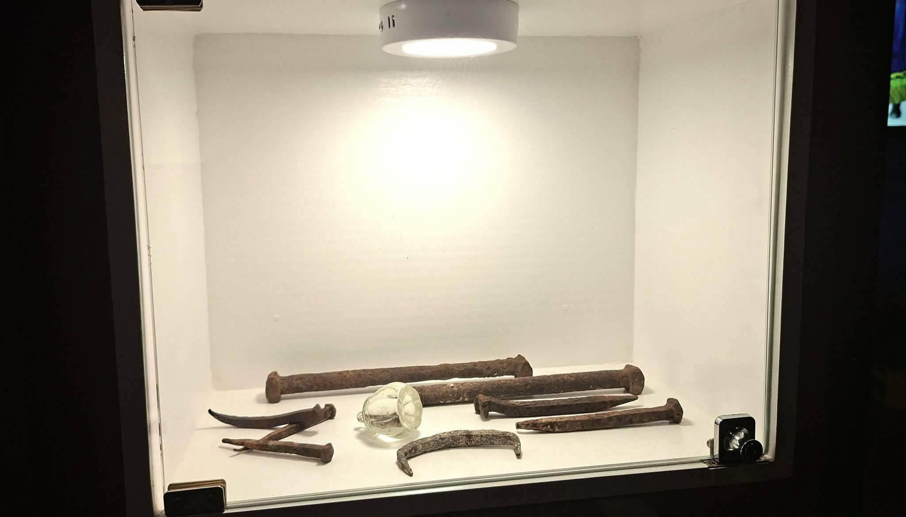
Old Railroad and Telegraph Items from Casa Real
Banaan Museum